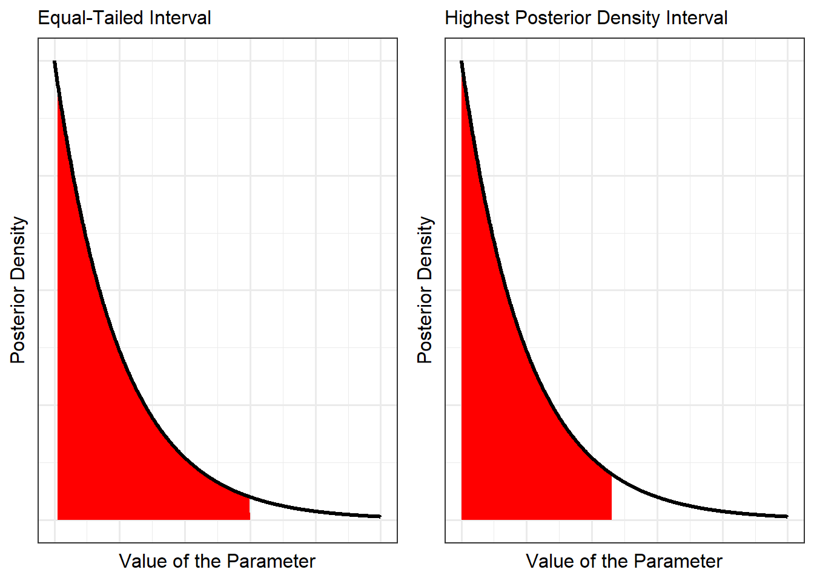

13 Interval Estimation
The previous chapter considered a single point estimate for the parameter of interest. However, this ignores the fact that there is variability in these estimates. The distribution itself tells us the parameter is more likely to fall in some regions than others. In response, we consider providing a range of plausible values for the parameter and quantifying our belief that the parameter falls in that range. This is the contrast between point and interval estimation.
Definition 13.1 (Point Estimation) Point estimation is the process of estimating a parameter with a single statistic. This is like trying to hit an infinitesimally small target with a dart.
Definition 13.2 (Interval Estimation) Interval estimation is the process of estimating a parameter with a range of values. This is like trying to capture a target with a ring.
Regardless of which method we use, both are estimates, and both depend on the posterior distribution. That is, both are statements about the parameter given the observed data and our prior beliefs. As there were various techniques for constructing a point estimate, there are various techniques for an interval estimate; the most common of these is the credible interval.
Definition 13.3 (Credible Interval) A \(100c\)% credible interval is an interval \((a, b)\) such that
\[Pr(a \leq \theta \leq b \mid \mathbf{y}) = \int_{a}^{b} \pi(\theta \mid \mathbf{y})d\theta = c.\]
Warning
For those who have had a previous statistics course taught from the classical Frequentist perspective, this seems to mirror a confidence interval, but the interpretation is completely different. Since probability is used to quantify subjective beliefs, notice that the credible interval allows us to say that we are \(100c\)% sure the parameter falls in this range, given the data.
Since we are working from a subjective interpretation of probability, we do not need to appeal to repeated sampling (like a Frequentist would). In fact, since a parameter is a fixed, unknown quantity, any probability statement is illogical from a Frequentist perspective. However, from the Bayesian perspective, the posterior quantifies our uncertainty about the parameter, and therefore the credible interval is simply summarizing this uncertainty. We can now say, based on the data observed (however much or little we have), we are \(100c\)% sure the parameter falls in this interval.
Note
There is no one unique credible interval for a parameter.
Since there are infinitely many regions which contain \(100c\)% of the posterior distribution, there are infinitely many credible intervals we could provide. In order to provide some level of continuity between applications, we tend to gravitate to one of two types of intervals which have nice properties.
Definition 13.4 (Equal-Tailed Credible Interval) The equal-tailed credible interval, which is probably the most commonly used in practice, chooses endpoints such that
\[Pr(\theta < a \mid \mathbf{y}) = \frac{1-c}{2} = Pr(\theta > b \mid \mathbf{y}).\]
As the name implies, an equal-tailed credible interval places the same probability in each tail; we are taking the middle \(100c\)% of the posterior distribution.
An equal-tailed interval is easy, but it may not always be the most intuitive interval. Figure 13.1 compares two potential 90% credible intervals for a hypothetical posterior distribution. Observe that the equal-tailed interval removes the bottom 5% of the distribution; while this band is narrow, it represents values which correspond to the highest posterior density values. It seems intuitive that we would want to choose the narrowest credible interval which still retains the same area under the curve, as illustrated in the second panel of Figure 13.1.
Definition 13.5 (Highest Density Interval) The highest density interval, often called an HDI or HPD (for highest posterior density), chooses the endpoints such that the interval is as short as possible.
When the density is unimodal, this can be accomplished by choosing the endpoints \(a\) and \(b\) such that
\[\pi(\theta \mid \mathbf{y}) \mid_{\theta = a} = \pi(\theta \mid \mathbf{y}) \mid_{\theta = b}\]
and
\[\int_{a}^{b} \pi(\theta \mid \mathbf{y} d\theta = c.\]
Note
If the posterior distribution is multimodal, then the highest density interval is actually a region as it will likely involve two disjoint intervals.
Warning
Most software that computes an HDI assumes the poterior distribution is unimodal.
Suppose we have a \(100c\)% credible interval \((a, b)\) for some parameter \(\theta\), but we are interested in a transformation of the parameter \(\eta = g(\theta)\). We can develop a \(100c\)% credible interval for \(\eta\) by applying the same transformation to each endpoint of the interval for \(\theta\). That is, \(\left(g(a), g(b)\right)\) will be a \(100c\)% credible interval for the parameter \(\eta\) given the data.
While we can guarantee that \(\left(g(a), g(b)\right)\) is a \(100c\)% credible interval, it will in general not be the HDI for \(\eta\), even if \((a, b)\) is the HDI for \(\theta\).
Example 13.1 (C-section Deliveries Continued) Example 9.1 introduced a study, a component of which includes estimating the probability of a mother undergoing a C-section delivery at a particular hospital.
Example 11.2 found the posterior distribution to be
\[\theta \mid \mathbf{x} \sim Beta\left(n + a, n\bar{x} + b\right)\]
where \(a = 17, b = 39, n = 15\) and \(n\bar{x} = 33\) given the observed data. Estimate the rate of C-sections at the hospital given the observed data.
Solution. Example 12.1 developed point estimates of the unknown parameter given the observed data (and prior beliefs). Here, we consider an interval estimate. To compute an equal-tailed interval, we must choose the values of \(s\) and \(t\) such that
\[ \begin{aligned} 0.025 &= \int_{0}^{s} \frac{\Gamma(32 + 72)}{\Gamma(32) \Gamma(72)} \theta^{32 - 1} (1 - \theta)^{72 - 1} d\theta \\ 0.025 &= \int_{t}^{1} \frac{\Gamma(32 + 72)}{\Gamma(32) \Gamma(72)} \theta^{32 - 1} (1 - \theta)^{72 - 1} d\theta. \\ \end{aligned} \]
Solving this system numerical gives the interval \((0.223, 0.399)\). We are 95% sure, given the data, the rate of C-sections at the hospital is between 22.3% and 39.9%. Given that the posterior distribution is unimodal and nearly symmetric, we would expect the HDI to be very similar to the equal-tailed interval.